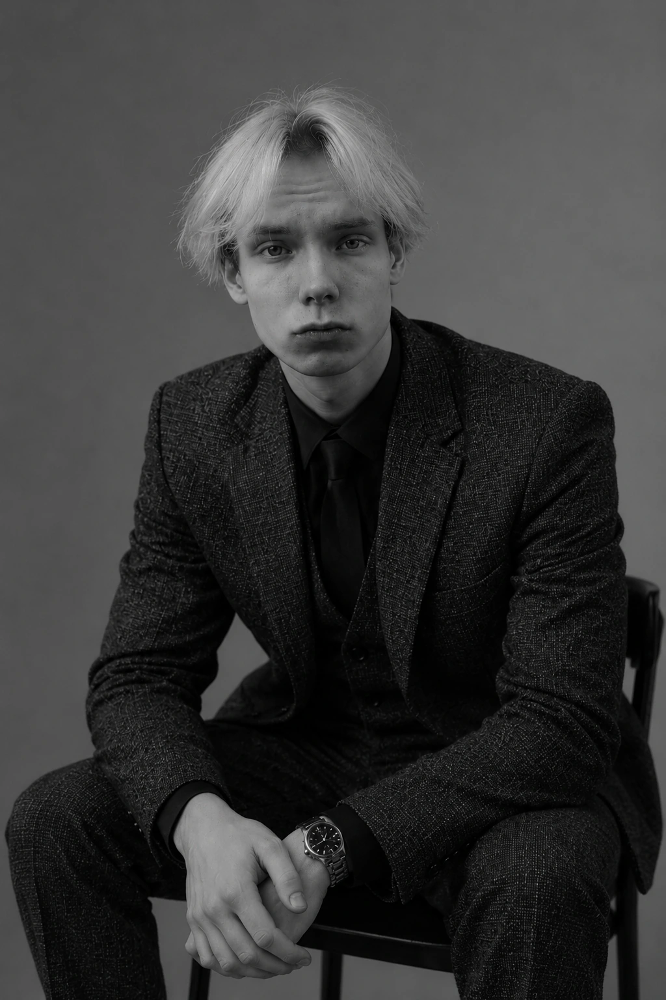
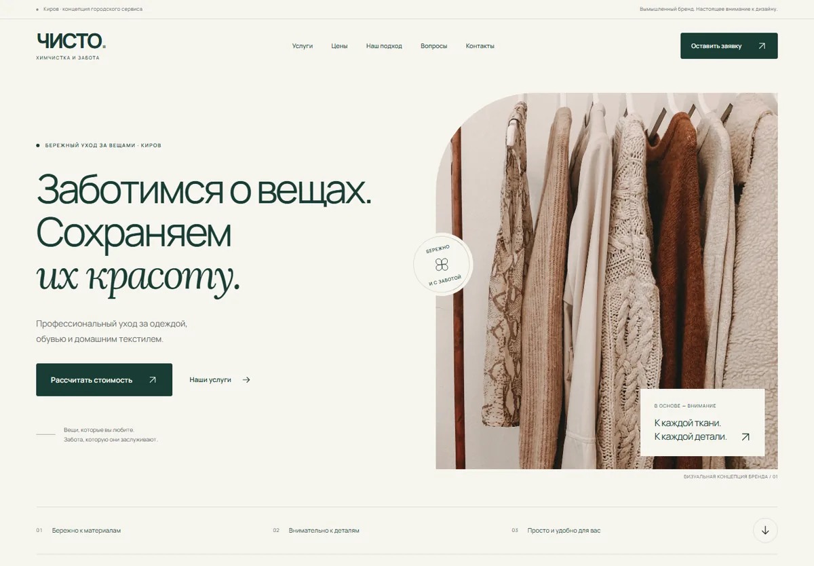
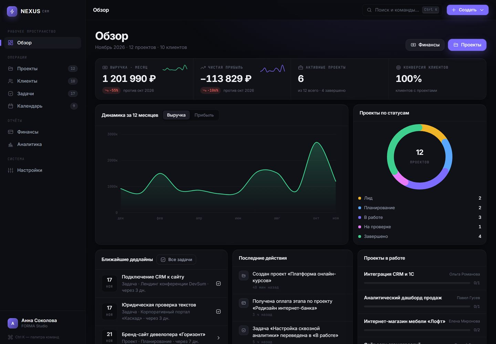
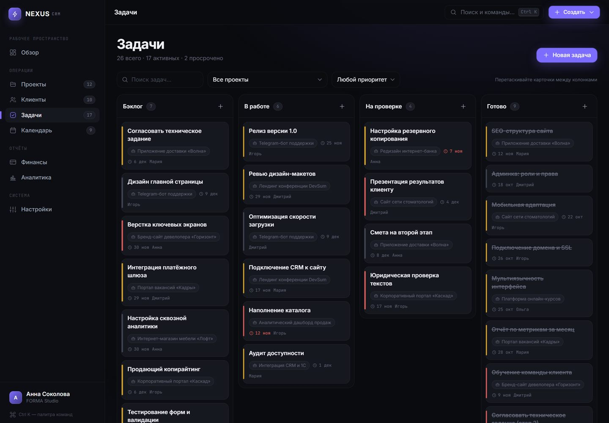
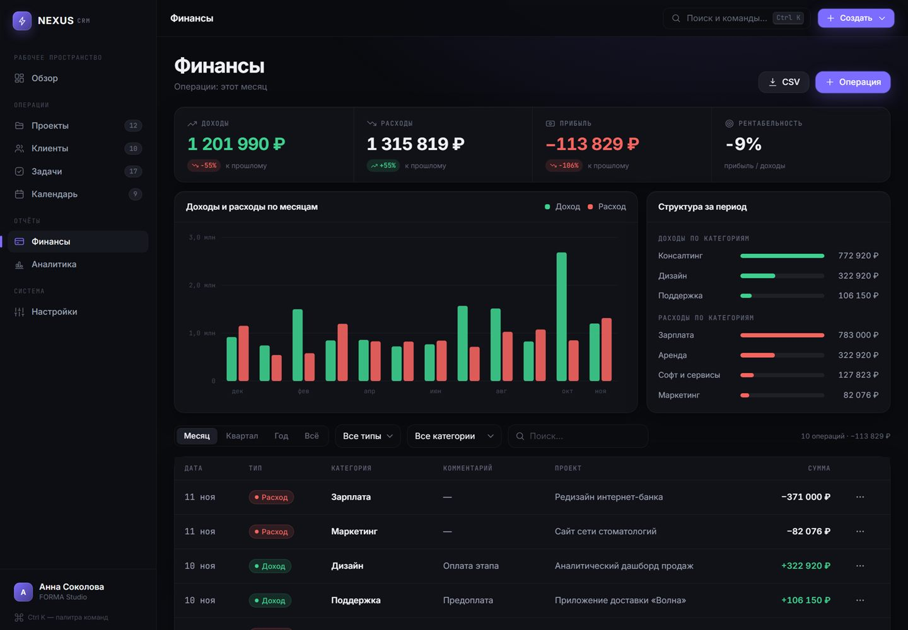
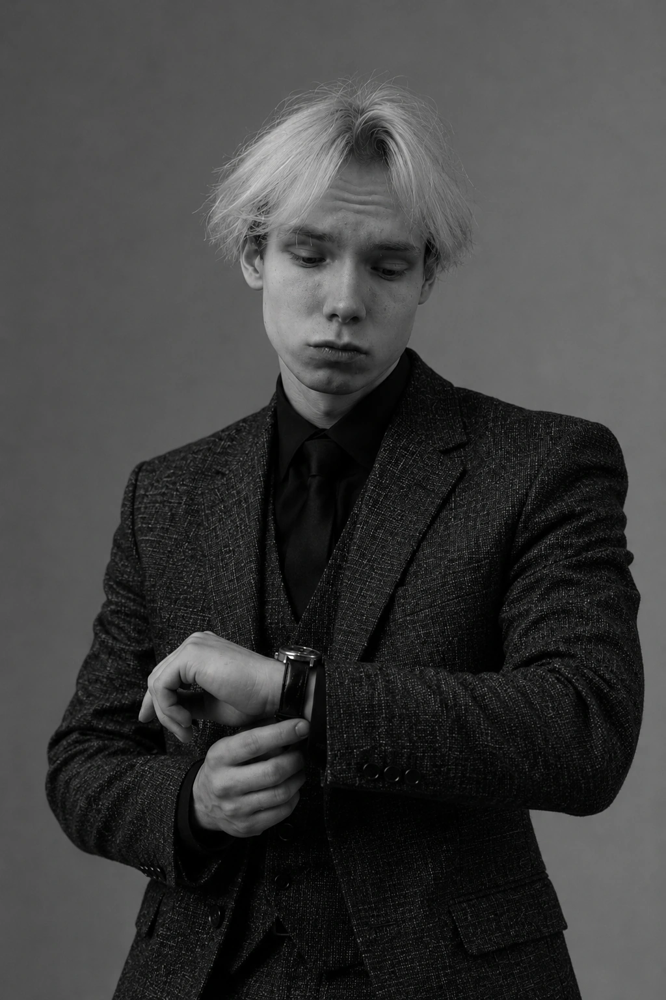

Fashion e-commerce2026
СДВИГ shop
Магазин одежды с характером. От каталога и фильтров до демонстрационного оформления заказа.
- Каталог с фильтрами и размерами
- Избранное и готовые образы
- Корзина и демо-оформление заказа
Открыт к новым проектам
Личный подход. Полный цикл.2026
Дизайн со смысломКод с характеромСтруктура с логикой
Смысл, визуал, код. Превращаю идею в сайт, который не растворяется среди похожих. Один автор — от первой мысли до последней детали.

01Избранные работы
Самостоятельные концепты, а не клиентские заказы. Каждый показывает мой подход к структуре, визуалу и разработке.
✳Fashion e-commerce2026
Магазин одежды с характером. От каталога и фильтров до демонстрационного оформления заказа.
Beauty & medical2026
Спокойный визуал для косметологии. Понятный выбор направления, прайс и переход к записи.
Local service2026
Локальный сервис без лишних шагов. Яркая подача, цены на виду и звонок в один тап.
Открыть сайт
Смотреть сайтPremium service2026
Внимание к вещам — внимание к деталям. Премиальный сервис с каталогом и интерактивным расчётом.
«СДВИГ» и «ЧИСТО» — вымышленные бренды. «СкороЧисто» и «Система Красоты» — неофициальные концепции и не подтверждают сотрудничество с компаниями. Контакты внутри последних двух проектов ведут к соответствующим организациям.
02Отдельный кейс
Полноценная CRM-система: восемь разделов, живые данные, графики и канбан. Не макет — рабочий интерфейс, которым пользуются каждый день.
✳


03Обо мне

Я — TRY/HARD. Работаю на стыке дизайна и кода, чтобы идея не терялась между красивым макетом и готовым сайтом.
Начинаю с того, что посетителю нужно понять и сделать. Затем собираю визуальную систему и адаптивную версию — с вниманием к ритму, деталям и удобству. Не беру шаблоны: каждый проект начинается с вопроса «что здесь должно работать».
04Подход
структура
Логика страницы, понятная навигация и правильные акценты. Сначала — смысл, потом — форма.
визуальная система
Типографика, цвет и подача, которые работают вместе, а не спорят за внимание.
рабочий сайт
Адаптивная вёрстка и понятные взаимодействия. На большом экране и в руке.
05Этапы работы
Сначала договоримся о направлении. Потом — дизайн, код и проверка. На каждом этапе понятно, что происходит дальше.
Обсудить вашу задачуЧто показываем, кому и зачем. Изучаем материалы, расставляем приоритеты и определяем действие, которое ждём от посетителя.
Результат: понятная структура и объём работы.Собираем типографику, палитру и подачу первого экрана. Согласуем визуальный характер до того, как переходить к полной сборке.
Результат: согласованная визуальная система.Переносим идею в адаптивную вёрстку. Добавляем реальные материалы, переходы и интерактивные состояния — без потери смысла и деталей.
Результат: рабочая версия для просмотра.Проверяем мобильную версию, ссылки и основные сценарии. Вносим финальные правки. Публикуем только после вашего согласования.
Результат: готовые файлы и опубликованная ссылка.06Следующий проект — ваш?
Есть идея, задача или сайт, которому нужен новый характер? Напишите в удобном мессенджере — обсудим объём и следующий шаг.
Открыт к новым проектам
Отвечаю лично. Напишите пару строк о задаче — предложу путь и срок.
Детали решают. Ваш проект — следующий.